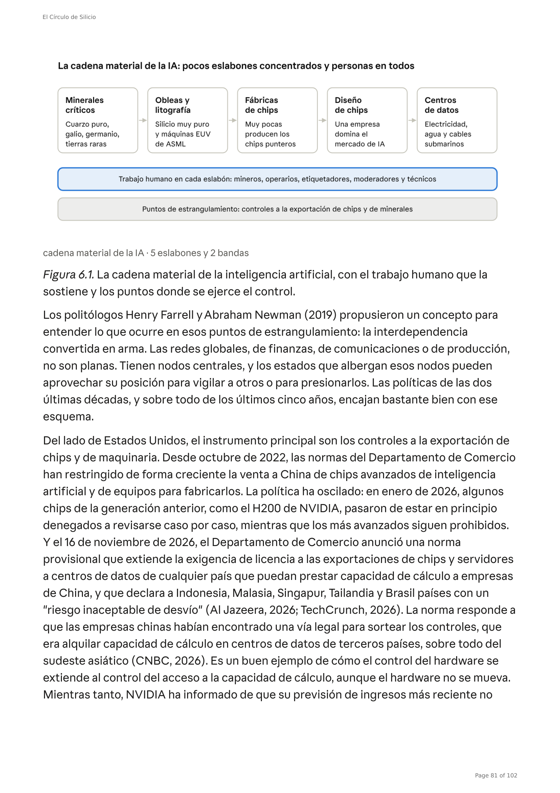

Capítulo 6. Quién sostiene lo invisible
Los cinco capítulos anteriores han recorrido un largo camino de la célula al cúbit, con tres ideas como brújula: que la información necesita un cuerpo, que importa a qué escala se controla ese cuerpo y que toda información está amenazada por el error. Este capítulo cambia de plano. Pasa de las cosas a las personas, y pregunta quién sostiene, quién decide, quién paga y quién soporta las consecuencias de todo lo que se ha descrito.
No pretende ser un tratado de sociología ni una investigación empírica. Es una reflexión que usa herramientas de la sociología y de los estudios sociales de la ciencia y la tecnología para ordenar preguntas que ya han ido apareciendo. Está escrito con una
cautela que conviene explicitar: casi toda la literatura sociológica sobre la inteligencia artificial y los semiconductores es reciente, y sobre la computación cuántica es mínima, de modo que muchas veces se trata de extrapolar a un campo lo que se ha estudiado en otro. Se dirá cuando sea así. El capítulo tiene seis secciones: la producción social de la invisibilidad, las piezas físicas y su control, el trabajo que no se ve, la delegación de decisiones en sistemas opacos, los datos y su relación con la realidad social, y una caja de herramientas teóricas con la que leer todo lo anterior.
6.1 El truco de la invisibilidad
En 1867, Karl Marx dedicó un apartado de El capital a lo que llamó el fetichismo de la mercancía: la tendencia de las relaciones sociales entre personas a presentarse como relaciones entre cosas (Marx, 1867). Cuando compramos un objeto, lo que vemos es el objeto y su precio, no el trabajo, las condiciones ni las relaciones que lo hicieron posible. Más de siglo y medio después, la idea sigue siendo una de las más útiles para pensar la tecnología digital, donde el efecto se lleva al extremo: una respuesta de un asistente de inteligencia artificial, o una fotografía que aparece en una pantalla, se presentan como cosas sin historia, sin materia y sin personas.
La sociología de la tecnología ha añadido a esa idea otras que la precisan. La investigadora Susan Leigh Star (1999) mostró que las infraestructuras tienen una propiedad curiosa: se vuelven invisibles cuando funcionan. Nadie piensa en el alcantarillado, en la red eléctrica o en un protocolo de internet, hasta que fallan. La invisibilidad, además, no es una cualidad intrínseca de la infraestructura sino una relación: lo que para una persona es un fondo transparente sobre el que hace su trabajo es, para otra, su trabajo mismo, como el del técnico que repara el cable o el del operario del centro de datos (Star y Ruhleder, 1996).
El sociólogo Bruno Latour (1987, 1999) propuso una expresión para este mecanismo: la caja negra. Cuando una máquina funciona sin problemas, los que la usan dejan de preguntarse qué hay dentro y solo atienden a lo que entra y a lo que sale. Según Latour, cuanto más éxito tienen una ciencia o una técnica, más opacas se vuelven, porque el éxito consiste justamente en que dejen de cuestionarse. Es la lógica que se vio en la sección 2.2, donde cada capa de software esconde la inferior, y en la 4.1, donde las metáforas de la interfaz están diseñadas para que nadie tenga que saber cómo funciona una carpeta.
La invisibilidad, por tanto, no es un accidente, sino algo que se produce, y se produce por varias vías. Una es el diseño: las interfaces se construyen para ocultar. Otra es el lenguaje, como se vio en el Capítulo 4. Otra es la distancia, que hace que quien usa un servicio no vea los minerales, el agua ni el trabajo que lo sostienen, como se mostró en la sección 2.6. Y otra es jurídica y comercial: el investigador Frank Pasquale (2015) ha descrito cómo el secreto empresarial y la complejidad técnica se combinan para que las decisiones que toman los sistemas automáticos, sobre crédito, empleo o información, queden fuera del escrutinio público. Los estudiosos Sheila Jasanoff y Sang-Hyun Kim (2015) han propuesto
llamar imaginarios sociotécnicos a las visiones compartidas del futuro que una sociedad construye alrededor de una tecnología y que orientan inversiones, leyes y expectativas. La nube y la inteligencia artificial son hoy dos de esos imaginarios, con sus promesas de abundancia sin coste y de decisión sin sesgo.
Hay un momento, sin embargo, en que lo invisible se vuelve visible: cuando falla. El sociólogo Charles Perrow (1984) estudió los accidentes de sistemas complejos, desde plantas nucleares hasta aviones, y sostuvo que, en sistemas con muchas piezas estrechamente acopladas, los fallos son en cierto modo normales, porque la interacción imprevista de errores pequeños es una propiedad del propio diseño. La idea conecta con el hilo del error de este libro: la fiabilidad que se describió en la sección 2.5 se consigue con capas de defensa, pero ningún sistema complejo es inmune. Las grandes caídas de servicios en la nube de los últimos años, que dejan sin funcionar miles de aplicaciones a la vez, son una forma de accidente normal, y ofrecen un breve vistazo de lo que hay detrás de la cortina.
6.2 Las piezas físicas y quién las controla
En los capítulos anteriores se fue reconstruyendo, pieza a pieza, la cadena material de la inteligencia artificial. Empieza en minas de las que sale cuarzo de pureza extrema, galio, germanio, tierras raras y otros minerales. Sigue en las obleas de silicio y en las máquinas de litografía que solo fabrica una empresa. Continúa en las fábricas de chips avanzados, de las que muy pocas pueden producir los más punteros, y en las empresas que los diseñan, entre las que una domina el mercado de aceleradores de inteligencia artificial. Termina en centros de datos conectados por cables submarinos, con un consumo de electricidad y de agua cada vez mayor. En esa cadena hay eslabones en los que una sola empresa, o unos pocos lugares, concentran una parte desproporcionada de la capacidad mundial. El periodista Chris Miller (2022) ha contado la historia de cómo se llegó a esa situación y por qué una parte tan importante de la fabricación de los chips más avanzados está en Taiwán, una isla cuyo estatus político es objeto de tensión entre las dos grandes potencias.
cadena material de la IA · 5 eslabones y 2 bandas
Figura 6.1. La cadena material de la inteligencia artificial, con el trabajo humano que la sostiene y los puntos donde se ejerce el control.
Los politólogos Henry Farrell y Abraham Newman (2019) propusieron un concepto para entender lo que ocurre en esos puntos de estrangulamiento: la interdependencia convertida en arma. Las redes globales, de finanzas, de comunicaciones o de producción, no son planas. Tienen nodos centrales, y los estados que albergan esos nodos pueden aprovechar su posición para vigilar a otros o para presionarlos. Las políticas de las dos últimas décadas, y sobre todo de los últimos cinco años, encajan bastante bien con ese esquema.
Del lado de Estados Unidos, el instrumento principal son los controles a la exportación de chips y de maquinaria. Desde octubre de 2022, las normas del Departamento de Comercio han restringido de forma creciente la venta a China de chips avanzados de inteligencia artificial y de equipos para fabricarlos. La política ha oscilado: en enero de 2026, algunos chips de la generación anterior, como el H200 de NVIDIA, pasaron de estar en principio denegados a revisarse caso por caso, mientras que los más avanzados siguen prohibidos. Y el 16 de noviembre de 2026, el Departamento de Comercio anunció una norma provisional que extiende la exigencia de licencia a las exportaciones de chips y servidores a centros de datos de cualquier país que puedan prestar capacidad de cálculo a empresas de China, y que declara a Indonesia, Malasia, Singapur, Tailandia y Brasil países con un “riesgo inaceptable de desvío” (Al Jazeera, 2026; TechCrunch, 2026). La norma responde a que las empresas chinas habían encontrado una vía legal para sortear los controles, que era alquilar capacidad de cálculo en centros de datos de terceros países, sobre todo del sudeste asiático (CNBC, 2026). Es un buen ejemplo de cómo el control del hardware se extiende al control del acceso a la capacidad de cálculo, aunque el hardware no se mueva. Mientras tanto, NVIDIA ha informado de que su previsión de ingresos más reciente no
cuenta con ninguna venta de cálculo para centros de datos en China (NVIDIA, 2026), y la prensa ha señalado que la empresa dejó de enviar chips de la generación anterior a China pese a tener licencia, en un contexto en el que Pekín también restringe las importaciones.
Del lado de China, la palanca son los minerales. Ese país concentra una parte muy grande de la producción de galio, que se usa en distintos componentes electrónicos: según las cifras del Servicio Geológico de Estados Unidos citadas por la prensa especializada, produjo cerca del 99 % del galio primario del mundo en 2024, y domina también el germanio refinado y el antimonio (Tom’s Hardware, 2025). En diciembre de 2024 prohibió en principio las exportaciones de galio, germanio y antimonio a Estados Unidos, como respuesta a los controles de chips, y en octubre de 2025 anunció un endurecimiento de los controles sobre tierras raras. Tras una tregua comercial en noviembre de 2025, suspendió parte de esas medidas durante un año. A finales de 2026, el calendario de esas suspensiones es complejo, con plazos que vencen entre finales de noviembre de 2026 y enero de 2027 según la medida, y conviene consultar la situación vigente en el momento de la lectura. Lo que importa para el argumento es el patrón: ambas potencias han descubierto que el control de un eslabón de la cadena material es una forma de poder, y usan ese poder cuando quieren presionar.
Europa ocupa una posición intermedia, y poco cómoda. Es la sede de ASML, una pieza imprescindible de la cadena, pero depende de otros para casi todo lo demás: chips avanzados, aceleradores de inteligencia artificial y capacidad de cálculo en la nube. La Comisión Europea anunció en febrero de 2025 la iniciativa InvestAI, con el objetivo de movilizar 200.000 millones de euros de inversión en inteligencia artificial, entre ellos
20.000 millones para construir grandes centros de cálculo, las llamadas gigafactorías de IA
(Comisión Europea, 2025). Hasta qué punto esas inversiones cambiarán la posición europea es una cuestión abierta.
Hay una dimensión de esta concentración que afecta también a quienes no están en el centro de la geopolítica. Como se vio en la sección 3.5, varios estudios han documentado una brecha de cómputo: los grupos académicos disponen de una fracción de la capacidad de cálculo de las grandes empresas, lo que limita su capacidad de entrenar, reproducir y auditar los modelos más grandes (Ahmed y Wahed, 2020; Besiroglu et al., 2024), y la industria ha pasado a dominar la investigación de frontera (Ahmed et al., 2023). Si lo que sabemos de los sistemas más potentes lo cuentan casi solo las empresas que los construyen, la capacidad de la sociedad para evaluarlos de forma independiente queda reducida. Esta es una forma de desigualdad que no se parece a la brecha digital de los años noventa, que era una cuestión de acceso a internet. Es una desigualdad de capacidad de cálculo, y de lo que esa capacidad permite saber, decidir y vigilar.
6.3 El trabajo que no se ve
En la sección 4.4 se vio que detrás de las palabras automático e inteligente suele haber personas, y se contó el caso de los etiquetadores de Kenia. Aquí interesa dar un paso más y preguntar cómo está organizado ese trabajo, y qué lugar ocupa en la economía global de la inteligencia artificial.
Un grupo de investigadores ha propuesto una tipología del trabajo de datos que sostiene a estos sistemas (Muldoon et al., 2024). Incluye la generación de datos, la selección y limpieza de los conjuntos de entrenamiento, la anotación, es decir, la clasificación de ejemplos por personas, la evaluación de los modelos y la moderación de contenidos. Hay además un tipo de trabajo que se hizo especialmente importante con los asistentes conversacionales: el de las personas que valoran las respuestas del sistema para que el modelo aprenda a comportarse como se espera, una técnica llamada aprendizaje por refuerzo con retroalimentación humana (Ouyang et al., 2022). Lo que parece una conversación espontánea con una máquina se ha moldeado, en buena parte, con juicios de personas contratadas para decir qué respuestas son mejores y cuáles inaceptables.
El modo en que se organiza ese trabajo tiene rasgos reconocibles. Se fragmenta en microtareas que se reparten por plataformas, lo que permite pagar por tarea y no por jornada. Se reparte de forma desigual en el mundo, y una parte importante se encarga a trabajadores de países de ingresos más bajos, como Kenia, Filipinas o Venezuela, a través de empresas intermediarias (Gray y Suri, 2019; Casilli, 2019). Y está gestionado por sistemas automáticos que miden, puntúan y sancionan, lo que la sociología del trabajo ha llamado gestión algorítmica. Alex Rosenblat y Luke Stark (2016) estudiaron este modelo en los conductores de una plataforma de transporte y mostraron cómo la asimetría de información entre la empresa y quien trabaja es una de sus bases. Steven Vallas y Juliet Schor (2020) han hecho un balance de lo que la sociología sabe sobre las plataformas, y concluyen que no son simples intermediarias, sino formas nuevas de organizar el trabajo que combinan rasgos del mercado, de la empresa y de la burocracia. La periodista Karen Hao (2025) ha reconstruido, a partir de entrevistas con trabajadores y directivos, cómo esa cadena de trabajo humano se integra en el negocio de las grandes empresas de inteligencia artificial.
Hay también un trabajo que no es de datos, pero que forma parte de la misma economía invisible: el de mantener las máquinas. Como se vio en la sección 2.5, la fiabilidad de un centro de datos descansa en personas que sustituyen piezas, vigilan sistemas y reparan averías, y la sociología del mantenimiento ha insistido en que esa labor es sistemáticamente menos valorada que la de crear cosas nuevas (Graham y Thrift, 2007; Jackson, 2014). Y en el extremo inicial de la cadena están los mineros, los operarios de las fábricas de chips y quienes trabajan en el reciclaje o el desguace de los aparatos, cuyas condiciones varían muchísimo según el lugar.
Para describir el conjunto de estas relaciones, los investigadores Nick Couldry y Ulises Mejias (2019) han propuesto el concepto de colonialismo de datos. Su argumento es que la apropiación de la vida social como materia prima para la extracción de datos tiene paralelismos estructurales con el colonialismo histórico: es una forma de apropiación de recursos y trabajo a escala global, con una nueva justificación ideológica. La comparación es una analogía, y es discutida. Hay quien piensa que puede ocultar las diferencias entre ambos procesos, y quien la considera útil para llamar la atención sobre una geografía del trabajo y del beneficio que sigue líneas históricas conocidas. Aquí se toma como lo que es, una lente que pone el foco en un patrón, el de que los costes y los beneficios de estas tecnologías no se reparten de forma uniforme en el mundo, y no como una descripción exhaustiva.
Lo que une todas estas formas de trabajo es que quedan fuera de la imagen pública de la tecnología. La inteligencia artificial se presenta como ciencia e ingeniería, y se habla poco de que su funcionamiento depende de millones de horas de trabajo humano repetitivo, mal pagado y a veces dañino para quien lo hace. Ese es, quizá, el ejemplo más claro de la tesis de este libro: lo inmaterial tiene un cuerpo, y ese cuerpo, a veces, es el de personas.
6.4 Delegar decisiones en sistemas opacos
En 1980, el politólogo Langdon Winner publicó un artículo con una pregunta provocadora: ¿tienen política los artefactos? Su respuesta era que sí, de dos maneras. Una es que algunos diseños técnicos favorecen ciertos intereses o ciertas formas de organización social. La otra es que algunas tecnologías son, por su propia naturaleza, compatibles con unas formas de poder y no con otras (Winner, 1980). Su ejemplo más famoso, el de unos puentes de Nueva York construidos a una altura que impedía el paso de los autobuses de transporte público, ha sido cuestionado por otros historiadores (Joerges, 1999), pero la idea general, que las decisiones técnicas llevan valores, sigue siendo central.
En las últimas décadas, esa pregunta se ha vuelto urgente porque se han delegado en sistemas automáticos decisiones de enorme alcance: quién recibe un crédito, qué candidatos pasan a la fase siguiente de una selección, qué familias reciben ayudas, quién es considerado un riesgo. Varios casos documentados sirven para entender lo que está en juego.
El primero es el de los sistemas que predicen la reincidencia de personas acusadas en Estados Unidos. En 2016, una investigación de ProPublica sostuvo que uno de ellos, llamado COMPAS, se equivocaba de forma distinta según la raza: cometía más errores en forma de falsos positivos con personas negras, es decir, las clasificaba como de alto riesgo y luego no reincidían, y más falsos negativos con personas blancas (Angwin et al., 2016). La empresa lo discutió, con otros criterios de medida. Los análisis matemáticos posteriores mostraron algo importante: cuando los grupos tienen tasas distintas del
fenómeno que se predice, varios criterios de equidad razonables no se pueden cumplir a la vez (Kleinberg et al., 2017). Dicho de otro modo, hay que elegir qué tipo de error es más tolerable, y esa elección es un juicio de valor, no una cuestión técnica.
El segundo es el de un algoritmo usado en hospitales de Estados Unidos para identificar a los pacientes que necesitaban más atención. Un estudio publicado en Science mostró que usaba el gasto sanitario previo como indicador de la necesidad de atención, y que como a los pacientes negros se destina menos gasto a igual necesidad, el sistema infravaloraba su necesidad real (Obermeyer et al., 2019). Nadie había programado una discriminación. Un indicador razonable en apariencia reprodujo una desigualdad que ya existía en los datos.
El tercero es europeo. En los Países Bajos, la autoridad tributaria usó un sistema de perfiles de riesgo para detectar fraude en las ayudas para el cuidado infantil, y miles de familias fueron acusadas injustamente de fraude y obligadas a devolver cantidades que no debían. Entre los factores que el sistema tenía en cuenta figuraba la doble nacionalidad (Amnistía Internacional, 2021). El escándalo provocó la dimisión del gobierno neerlandés en enero de 2021. El cuarto es el de Australia, donde un sistema automático de cobro de deudas de prestaciones sociales, conocido como Robodebt, reclamó cantidades indebidas a cientos de miles de personas, y una comisión real concluyó en 2023 que el esquema era ilegal y había causado daños graves (Royal Commission into the Robodebt Scheme, 2023). Estos casos son ejemplos de lo que la antropóloga Madeleine Elish (2019) llamó zonas de deformación moral, que se mencionaron en el Capítulo 4: cuando el sistema falla, la responsabilidad se difumina entre quien lo diseñó, quien lo compró y quien lo usó.
La literatura académica y periodística ha reunido muchos más ejemplos y ha propuesto marcos para entenderlos. Virginia Eubanks (2018) estudió cómo los sistemas automáticos de gestión de ayudas sociales en Estados Unidos vigilan y castigan a los pobres. Cathy O’Neil (2016) los llamó armas de destrucción matemática: modelos opacos, a gran escala y que dañan. Safiya Noble (2018) analizó cómo los buscadores reproducen estereotipos racistas y sexistas. Y Ruha Benjamin (2019) propuso hablar de un nuevo código Jim Crow, para designar las formas en que la tecnología aparentemente neutra reproduce jerarquías raciales. Son aportaciones distintas, con diferencias metodológicas y de tono, pero coinciden en algo: los sistemas automáticos no corrigen por sí mismos las desigualdades sociales, sino que las incorporan, las escalan y las vuelven menos visibles.
Hay otra pieza del problema, que es la forma en que las personas se relacionan con las recomendaciones de los sistemas. La psicología de las organizaciones ha descrito el llamado sesgo de automatización: la tendencia a fiarse en exceso de las ayudas automáticas y a dejar de comprobar lo que dicen (Parasuraman y Manzey, 2010). Combinado con la opacidad, eso reduce la capacidad de detectar errores. La investigadora Jenna Burrell (2016) distinguió tres tipos de opacidad en los sistemas de aprendizaje automático: la que nace del secreto comercial, la que nace de la falta de formación técnica de quien los evalúa, y la que nace de la propia naturaleza de estos
sistemas, cuyo funcionamiento interno, como se vio en el Capítulo 3, es un conjunto de números que nadie puede leer con facilidad. Cada tipo exige respuestas distintas: transparencia legal, formación y herramientas de interpretación.
En paralelo, el sociólogo Perrow (1984) y la socióloga Diane Vaughan (1996) han estudiado desde otro ángulo cómo las organizaciones llegan a normalizar los fallos. Vaughan, a propósito de la explosión del transbordador Challenger, describió lo que llamó normalización de la desviación: cuando se tolera una pequeña anomalía sin consecuencias, lo que era una excepción pasa a ser lo normal, hasta que ocurre el desastre. Es un mecanismo que se puede reconocer en el modo en que algunas organizaciones adoptan sistemas automáticos que funcionan casi siempre, y dejan de prestar atención a las condiciones en que fallan.
La respuesta pública ha sido, sobre todo, regulatoria. En la Unión Europea, el Reglamento General de Protección de Datos ya reconoce, en su artículo 22, el derecho a no ser objeto de decisiones basadas únicamente en el tratamiento automatizado con efectos jurídicos significativos, aunque el alcance práctico de un derecho a la explicación se ha discutido mucho (Wachter et al., 2017). El Reglamento de Inteligencia Artificial, en vigor desde agosto de 2024, adopta un enfoque por niveles de riesgo: las prácticas prohibidas se aplican desde febrero de 2025 y las obligaciones para los modelos de uso general desde agosto de 2025. Las obligaciones para los sistemas de alto riesgo, que son los que afectan a decisiones sobre empleo, educación, crédito o servicios públicos, iban a empezar a aplicarse en agosto de 2026, pero un acuerdo político de mayo de 2026, que el Consejo de la Unión Europea aprobó definitivamente en junio, las aplaza a diciembre de 2027 para los sistemas independientes y a agosto de 2028 para los integrados en productos regulados (Consejo de la Unión Europea, 2026). Quienes defienden el aplazamiento sostienen que las normas técnicas necesarias no estaban listas, y quienes lo critican hablan de una rebaja de las garantías. No es la clase de debate que se pueda zanjar aquí, pero ilustra una tensión constante: la tecnología avanza más deprisa que la capacidad de las sociedades para regularla.
6.5 Datos, medición y realidad
Hay una última cuestión que atraviesa todo el libro y que concierne especialmente a quien estudia la sociedad. Si la información tiene un cuerpo, y si ese cuerpo es cada vez más potente, ¿qué cambia en nuestra forma de conocer lo social?
A finales de la primera década del siglo, la promesa era muy ambiciosa. En 2008, Chris Anderson, entonces director de la revista Wired, publicó un artículo con un título provocador, “el fin de la teoría”, en el que sostenía que con suficientes datos los números hablarían por sí solos y ya no haría falta formular hipótesis (Anderson, 2008). Poco después, Viktor Mayer-Schönberger y Kenneth Cukier (2013) popularizaron la idea de que, con los datos digitales, se podía pasar de las muestras a “N igual a todo”: observar a
toda la población y no solo a una parte. La idea tenía una lógica atractiva, y para quien proviene de las ciencias sociales, donde las muestras son pequeñas y las encuestas caras, resultaba seductora.
La sociología respondió pronto, y de manera crítica. En 2007, Mike Savage y Roger Burrows advirtieron de que la sociología empírica podía entrar en crisis, pero no porque los datos fueran a hacerla innecesaria, sino porque las empresas, con los registros de sus transacciones, ya poseían descripciones de la vida social más ricas que las de los investigadores académicos (Savage y Burrows, 2007). En 2012, danah boyd y Kate Crawford publicaron un texto muy citado con seis provocaciones sobre los macrodatos, entre ellas que más datos no siempre son mejores datos, que los datos de una red social no representan a la población general y que el acceso a ellos está distribuido de forma muy desigual (boyd y Crawford, 2012). Rob Kitchin (2014) analizó cómo esta supuesta nueva epistemología descansa en cuatro afirmaciones, la de que se puede capturar toda la población, la de que se puede prescindir de la teoría, la de que los datos hablan por sí solos y la de que el análisis es objetivo, y mostró que ninguna se sostiene sin matices.
Un caso sirvió como parábola. Google Flu Trends era un sistema que estimaba la prevalencia de la gripe a partir de las búsquedas en internet, y durante un tiempo pareció funcionar de maravilla. Sin embargo, en 2012 y 2013 sobrestimó la gripe con un margen muy grande. Un análisis publicado en Science explicó por qué: el sistema mezclaba correlaciones sin una teoría que las explicara, era vulnerable a los cambios en el propio buscador y ofrecía una imagen engañosa de exactitud, lo que los autores llamaron la soberbia de los macrodatos (Lazer et al., 2014).
Hay razones de fondo por las que los datos digitales no equivalen a la sociedad. Una es que están condicionados por las plataformas que los producen: quienes usan una red social no son una muestra de la población, y las normas y el diseño de cada plataforma moldean lo que la gente hace, y por tanto lo que queda registrado (Ruths y Pfeffer, 2014). Otra es que los datos nunca son un dato en bruto: la investigadora Lisa Gitelman (2013) los describió como un oxímoron, porque cada dato se produce con instrumentos, categorías y decisiones que dejan en él su huella. Y otra más es que medir cambia lo medido. Los historiadores de la cuantificación han mostrado cómo las estadísticas no solo describen sociedades sino que ayudan a construirlas, a darles categorías y a gobernarlas (Porter, 1995; Desrosières, 1998). Y los sociólogos Wendy Espeland y Mitchell Stevens (1998) estudiaron cómo convertir cosas distintas en números comparables, lo que llamaron comensuración, produce nuevas jerarquías y presiones. En la formulación del psicólogo Donald Campbell (1979), cuanto más se usa un indicador social para tomar decisiones, más sujeto está a presiones que corrompen el propio indicador y distorsionan los procesos que pretendía medir.
Nada de lo anterior significa que los nuevos datos sean inútiles. La ciencia social computacional, un campo que cobró forma a partir de 2009, muestra que pueden observarse patrones de conducta a escala que antes eran inaccesibles, y que permiten diseñar experimentos nuevos, con la condición de plantearse con cuidado los problemas éticos y de representatividad (Lazer et al., 2009; Salganik, 2018). Lo que significa es que hay que entrar en el debate con la actitud de quien sabe que el “todo” digital es siempre una parte, y que esa parte depende de quién recoge los datos, con qué instrumentos y con qué fines.
Hay un ejemplo muy reciente y relevante para el argumento de este libro. Con los grandes modelos de lenguaje ha surgido la idea de usarlos para simular a poblaciones humanas, por ejemplo respondiendo encuestas como si fueran personas de un determinado perfil. En un estudio de 2023, un equipo mostró que un modelo de lenguaje al que se daba el perfil demográfico de una persona reproducía con bastante fidelidad patrones de voto de distintos grupos de Estados Unidos, lo que llamaron fidelidad algorítmica (Argyle et al., 2023). Poco después, otro trabajo puso en duda esa prometedora lectura: los respondientes sintéticos mostraban menos variación que los reales, sus resultados dependían mucho de cómo se formulaba la pregunta y cambiaban con el tiempo, y los autores concluyeron que sustituir a los humanos por modelos es una práctica arriesgada (Bisbee et al., 2024). El debate sigue abierto, y lo que interesa aquí es que ilustra bien el problema: un modelo entrenado con textos escritos por una parte de la humanidad, con las categorías y los sesgos de esos textos, no es una muestra de la sociedad sino una síntesis de lo que cierta parte de ella ha dejado escrito. Podría ser una herramienta útil para explorar hipótesis, pero difícilmente sustituye a las personas a las que se quiere conocer.
En definitiva, la pregunta sobre cómo se conoce lo social con estas tecnologías vuelve al principio del libro. Los datos tienen cuerpo, que son sensores, plataformas, bases de datos, categorías y personas que las construyen. Lo que se llama capturar el todo es, en realidad, capturar lo que esos cuerpos permiten ver. Y una sociedad que se observa a sí misma a través de instrumentos que posee un pequeño número de empresas tiene un problema de conocimiento, además de un problema de poder.
6.6 Una caja de herramientas sociológica
Este apartado reúne, en forma de caja de herramientas, los conceptos que se han ido usando a lo largo del capítulo y del libro, y añade otros. No es un estado de la cuestión sino una selección, y cada herramienta se presenta con lo que ilumina y con sus límites, porque ninguna teoría lo explica todo y una caja de herramientas útil debe incluir la indicación de cuándo no usar cada una.
La primera herramienta es la del fetichismo y la cosificación. Marx (1867) describió cómo las relaciones sociales se presentan como relaciones entre cosas, y el filósofo György Lukács (1923) desarrolló la idea con el concepto de cosificación, que Berger y Luckmann (1966) trasladaron a la sociología del conocimiento: lo construido socialmente llega a percibirse como natural. Ilumina por qué es tan difícil ver el cuerpo de la información: el producto oculta su proceso. Tiene un límite que conviene tener presente. Puede llevar a tratar a las personas como engañadas, cuando muchas saben que detrás de la nube hay centros de datos y la usan igual. La idea explica por qué ver es difícil, pero no es una acusación a quien no ve.
La segunda es la de las cajas negras y las redes. Latour (1987) y Michel Callon (1986) propusieron una sociología en la que los objetos, los minerales, las leyes y las personas forman redes en las que todos actúan, y en la que el trabajo del investigador consiste en seguir esas conexiones y reabrir las cajas negras que el éxito ha cerrado. Ilumina muy bien las cadenas de este libro: una red que une una mina de cuarzo, una máquina de litografía, una fábrica en Taiwán, una empresa de diseño de chips, un centro de datos y un usuario. Su límite lo señaló Winner (1993): al tratar por igual a todos los actores, puede olvidar quién queda excluido de la red y quién tiene más poder para formarla, de modo que abrir la caja negra y no preguntar por las estructuras de dominación puede dejarla igual de vacía.
La tercera es la de la construcción social y la política de la tecnología. Trevor Pinch y Wiebe Bijker (1984) mostraron, con la historia de la bicicleta, que el diseño que llega a imponerse no es el único posible ni el mejor en términos absolutos, sino el resultado de una negociación entre grupos con intereses distintos, un proceso que llamaron flexibilidad interpretativa y cierre. Winner (1980) y Andrew Feenberg (1999) insistieron en que las tecnologías incorporan valores y que, por tanto, pueden y deben ser objeto de decisión democrática. Ilumina que nada de lo contado era inevitable: el cerrojo de CUDA es contingente (David, 1985; Arthur, 1989), el significado de “inteligencia artificial” o de “abierto” se negocia, y las decisiones sobre qué datos recoger o qué error tolerar son decisiones de personas. Su límite es el opuesto: un constructivismo extremo puede subestimar las restricciones materiales, como los límites de la física que se vieron en los capítulos 2 y 5. La investigadora Sally Wyatt (2008) ha analizado cómo, pese a que el determinismo tecnológico se considera superado en la academia, sigue muy vivo en el discurso público, en frases como “la inteligencia artificial va a cambiarlo todo”. La posición más sensata es probablemente intermedia: las tecnologías dan forma a la sociedad y la sociedad da forma a las tecnologías, dentro de límites físicos y sociales reales.
La cuarta herramienta reúne las ideas sobre infraestructura, mantenimiento y accidentes. Star (1999) mostró que la infraestructura es invisible cuando funciona, Graham y Thrift (2007) y Jackson (2014) que el mantenimiento es una dimensión descuidada de la vida tecnológica, Perrow (1984) que en los sistemas complejos y estrechamente acoplados los accidentes son normales, y Vaughan (1996) que las organizaciones pueden normalizar las
desviaciones hasta que ocurre el desastre. Es la herramienta que mejor conecta con el hilo del error: ofrece una sociología del fallo. Su límite es cierto pesimismo. Karl Weick y Kathleen Sutcliffe (2001) estudiaron organizaciones, como los portaaviones o las centrales nucleares, que operan en condiciones de riesgo con una fiabilidad notable, y mostraron que lo consiguen con prácticas de atención constante a los fallos pequeños y de respeto por la experiencia de quienes están más cerca de la operación, lo que sugiere que el accidente no es inevitable.
La quinta es la del riesgo, la confianza y los sistemas expertos. El sociólogo Anthony Giddens (1990) sostuvo que la vida moderna depende de la confianza en sistemas abstractos que no entendemos, como el sistema bancario o la aviación, y que esa confianza se sostiene en parte en los puntos de contacto con personas que los representan. Ulrich Beck (1992) describió una sociedad del riesgo, en la que la modernización produce riesgos que son difíciles de percibir y de atribuir a alguien concreto, lo que él llamó irresponsabilidad organizada. Ilumina bien por qué confiamos en la nube y en los sistemas automáticos sin comprenderlos, y por qué es tan difícil exigir responsabilidades cuando todo falla en una cadena de actores. Su límite es el nivel de abstracción: son teorías de la modernidad en general, y habrá que comprobar, con estudios empíricos, cuánta confianza existe realmente en cada caso y de qué depende.
La sexta herramienta agrupa las teorías críticas del capitalismo de plataformas. Nick Srnicek (2017) describió las plataformas como un modelo de negocio que extrae y analiza datos y que tiende al monopolio. Shoshana Zuboff (2019) propuso el concepto de capitalismo de vigilancia: una lógica económica que convierte la experiencia humana en datos de comportamiento para predecirlo y modificarlo. Couldry y Mejias (2019) hablaron de colonialismo de datos, y Pasquale (2015) de una sociedad de caja negra. Iluminan quién se beneficia, cómo se organiza el trabajo que se vio en la sección 6.3 y por qué los servicios gratuitos no lo son. Tienen límites conocidos. Evgeny Morozov (2019), entre otros, criticó la tesis de Zuboff por exagerar la novedad del fenómeno y la eficacia de la predicción del comportamiento, y por atribuir a una lógica nueva rasgos que forman parte de la historia del capitalismo. Y la analogía colonial, como ya se dijo, es discutida.
La séptima, por último, es la de la sociología contemporánea de los algoritmos y de la inteligencia artificial, que es un campo joven y en rápido crecimiento. Jenna Burrell y Marion Fourcade (2021) propusieron hablar de una sociedad de algoritmos en la que aparecen nuevos grupos sociales, una élite del código que diseña los sistemas y un cibertariado que hace el trabajo de datos que se describió en 6.3. Fourcade y Johns (2020) han insistido en la recursividad entre el aprendizaje social y el aprendizaje automático: los sistemas aprenden de datos sociales, actúan sobre la sociedad y generan nuevos datos, en un juego de retroalimentaciones, clasificaciones y vínculos que los autores resumen en el título de su trabajo, Loops, ladders and links. En la práctica, esas retroalimentaciones pueden amplificar errores. Un ejemplo estudiado es el de los sistemas de policía
predictiva, en los que enviar más agentes a un barrio genera más registros de delitos en ese barrio y el sistema se confirma a sí mismo (Ensign et al., 2018). Massimo Airoldi (2022) propuso el concepto de habitus de máquina, tomado de Pierre Bourdieu: los sistemas que aprenden de datos sociales adquieren disposiciones que reflejan la estructura social de la que proceden y después actúan sobre ella. Marion Fourcade y Kieran Healy (2024) describieron una sociedad ordinal, en la que la puntuación y la clasificación continua de las personas, por sistemas que ellas no ven, producen jerarquías nuevas. Y Kelly Joyce y sus colegas (2021) hicieron una llamada a la sociología para que estudie la inteligencia artificial como una fuerza estructural que reconfigura las desigualdades y las instituciones. El límite de este campo es su juventud: hay más conceptos que evidencia empírica, y existe un riesgo, que los propios autores señalan, de que la sociología acabe aceptando como ciertas algunas promesas de la industria.
No es una lista cerrada ni jerárquica. La mejor forma de usarla es como un conjunto de preguntas que se pueden llevar a cualquier tecnología: qué se oculta y cómo, quién forma la red y quién queda fuera, qué decisiones de diseño parecen inevitables y no lo son, quién mantiene lo que funciona, en quién se confía sin saber por qué, quién se beneficia y quién paga, y cómo se retroalimenta el sistema con los datos que él mismo produce.
Para cerrar el capítulo
Este capítulo ha recorrido seis ideas. La primera es que la invisibilidad de la tecnología es producida, por el diseño, el lenguaje, la distancia y el secreto, y no es un accidente. La segunda es que la cadena material de la inteligencia artificial tiene eslabones muy concentrados, y que el control de esos eslabones se ha convertido en un instrumento de poder entre estados, con una geografía que cambia casi cada mes, y en una desigualdad de capacidad de cálculo dentro de la propia ciencia. La tercera es que detrás de lo automático hay trabajo humano, mal reconocido y a menudo mal pagado, repartido de forma desigual en el mundo. La cuarta es que delegar decisiones en sistemas opacos obliga a elegir qué error se tolera y quién lo soporta, y que esa elección no es técnica. La quinta es que los datos digitales no equivalen a la sociedad, y que quien dice capturar el todo ha olvidado el cuerpo de sus instrumentos. La sexta es que la sociología ofrece herramientas, con sus límites, para pensar todo esto sin caer ni en la fascinación ni en el rechazo.
En cuanto a qué se puede hacer, lo que se discute puede agruparse en cuatro líneas. Una es la de la transparencia y la regulación, que va desde las normas sobre decisiones automatizadas hasta el reglamento europeo de inteligencia artificial, con sus aplazamientos y sus debates. Otra es la de la infraestructura pública de cálculo, para reducir la brecha entre las empresas y las universidades, de la que la iniciativa europea de gigafactorías es un ejemplo todavía por probar. Otra es la de las condiciones de trabajo de quienes hacen el trabajo de datos y de moderación, donde los intentos de organización
colectiva de los trabajadores, como el sindicato de Nairobi, son aún frágiles. Y otra es la formación: entender cómo funcionan las cosas, que es en el fondo el propósito de este libro, no resuelve por sí solo ningún problema, pero es una condición para poder discutirlos.
Si hubiera que resumir el libro en tres preguntas que se pueden hacer ante cualquier tecnología, serían estas. ¿Qué cuerpo tiene, es decir, qué materia, qué energía y qué trabajo hay detrás? ¿Quién lo mantiene y quién lo paga? Y, por último, ¿qué error admite, y quién lo soporta cuando ocurre?
Lecturas recomendadas
Susan Leigh Star, The Ethnography of Infrastructure: el artículo breve y claro que
explica por qué las infraestructuras desaparecen de la vista.
Langdon Winner, Do Artifacts Have Politics?: el clásico sobre los valores que
incorporan los diseños técnicos.
Charles Perrow, Normal Accidents: una sociología del fallo en sistemas complejos.
Virginia Eubanks, Automating Inequality: casos de sistemas automáticos aplicados a la
protección social.
Nick Couldry y Ulises Mejias, The Costs of Connection: la propuesta del colonialismo
de datos.
Marion Fourcade y Kieran Healy, The Ordinal Society: un análisis de la clasificación y la
puntuación continuas de las personas.Referencias del capítulo 6
Ahmed, N., y Wahed, M. (2020). The de-democratization of AI: Deep learning and the compute divide in artificial intelligence research (arXiv:2010.15581).
Ahmed, N., Wahed, M., y Thompson, N. C. (2023). The growing influence of industry in AI research. Science, 379(6635), 884-886.
Airoldi, M. (2022). Machine habitus: Toward a sociology of algorithms. Polity.
Al Jazeera. (2026, 17 de noviembre). US moves to block China’s remote access to AI chips amid Nvidia scandal.
Amnistía Internacional. (2021). Xenophobic machines: Discrimination through unregulated use of algorithms in the Dutch childcare benefits scandal. Amnesty International.
Anderson, C. (2008, 23 de junio). The end of theory: The data deluge makes the scientific method obsolete. Wired.
Angwin, J., Larson, J., Mattu, S., y Kirchner, L. (2016, 23 de mayo). Machine bias. ProPublica.
Argyle, L. P., Busby, E. C., Fulda, N., Gubler, J. R., Rytting, C., y Wingate, D. (2023). Out of one, many: Using language models to simulate human samples. Political Analysis, 31(3), 337-351.
Arthur, W. B. (1989). Competing technologies, increasing returns, and lock-in by historical events. The Economic Journal, 99(394), 116-131.
Beck, U. (1992). Risk society: Towards a new modernity. Sage.
Benjamin, R. (2019). Race after technology: Abolitionist tools for the New Jim Code. Polity.
Berger, P. L., y Luckmann, T. (1966). The social construction of reality: A treatise in the sociology of knowledge. Doubleday.
Besiroglu, T., Bergerson, S. A., Michael, A., Heim, L., Luo, X., y Thompson, N. (2024). The compute divide in machine learning: A threat to academic contribution and scrutiny? (arXiv:2401.02452).
Bisbee, J., Clinton, J. D., Dorff, C., Kenkel, B., y Larson, J. M. (2024). Synthetic replacements for human survey data? The perils of large language models. Political Analysis, 32(4), 401- 416.
boyd, d., y Crawford, K. (2012). Critical questions for big data: Provocations for a cultural, technological, and scholarly phenomenon. Information, Communication & Society, 15(5), 662-679.
Burrell, J. (2016). How the machine “thinks”: Understanding opacity in machine learning algorithms. Big Data & Society, 3(1), 1-12.
Burrell, J., y Fourcade, M. (2021). The society of algorithms. Annual Review of Sociology, 47, 213-237.
Callon, M. (1986). Some elements of a sociology of translation: Domestication of the scallops and the fishermen of St Brieuc Bay. En J. Law (Ed.), Power, action and belief: A new sociology of knowledge? (pp. 196-233). Routledge & Kegan Paul.
Campbell, D. T. (1979). Assessing the impact of planned social change. Evaluation and Program Planning, 2(1), 67-90.
Casilli, A. A. (2019). En attendant les robots: Enquête sur le travail du clic. Seuil.
CNBC. (2026, 18 de noviembre). New U.S. chip curbs put Southeast Asia’s data center boom at risk.
Comisión Europea. (2025, 11 de febrero). EU launches InvestAI initiative to mobilise €200 billion of investment in artificial intelligence [Comunicado de prensa].
Consejo de la Unión Europea. (2026, 29 de junio). Aprobación definitiva del Digital Omnibus on AI [Comunicado de prensa].
Couldry, N., y Mejias, U. A. (2019). The costs of connection: How data is colonizing human life and appropriating it for capitalism. Stanford University Press.
David, P. A. (1985). Clio and the economics of QWERTY. The American Economic Review, 75(2), 332-337.
Desrosières, A. (1998). The politics of large numbers: A history of statistical reasoning. Harvard University Press.
Elish, M. C. (2019). Moral crumple zones: Cautionary tales in human-robot interaction. Engaging Science, Technology, and Society, 5, 40-60.
Ensign, D., Friedler, S. A., Neville, S., Scheidegger, C., y Venkatasubramanian, S. (2018). Runaway feedback loops in predictive policing. En Proceedings of the 1st Conference on Fairness, Accountability and Transparency (PMLR 81, pp. 160-171).
Espeland, W. N., y Stevens, M. L. (1998). Commensuration as a social process. Annual Review of Sociology, 24, 313-343.
Eubanks, V. (2018). Automating inequality: How high-tech tools profile, police, and punish the poor. St. Martin’s Press.
Farrell, H., y Newman, A. L. (2019). Weaponized interdependence: How global economic networks shape state coercion. International Security, 44(1), 42-79.
Feenberg, A. (1999). Questioning technology. Routledge.
Fourcade, M., y Healy, K. (2024). The ordinal society. Harvard University Press.
Fourcade, M., y Johns, F. (2020). Loops, ladders and links: The recursivity of social and machine learning. Theory and Society, 49(5-6), 803-832.
Giddens, A. (1990). The consequences of modernity. Polity.
Gitelman, L. (Ed.). (2013). “Raw data” is an oxymoron. MIT Press.
Graham, S., y Thrift, N. (2007). Out of order: Understanding repair and maintenance. Theory, Culture & Society, 24(3), 1-25.
Gray, M. L., y Suri, S. (2019). Ghost work: How to stop Silicon Valley from building a new global underclass. Houghton Mifflin Harcourt.
Hao, K. (2025). Empire of AI: Dreams and nightmares in Sam Altman’s OpenAI. Penguin Press.
Jackson, S. J. (2014). Rethinking repair. En T. Gillespie, P. J. Boczkowski y K. A. Foot (Eds.), Media technologies: Essays on communication, materiality, and society (pp. 221-239). MIT Press.
Jasanoff, S., y Kim, S.-H. (Eds.). (2015). Dreamscapes of modernity: Sociotechnical imaginaries and the fabrication of power. University of Chicago Press.
Joerges, B. (1999). Do politics have artefacts? Social Studies of Science, 29(3), 411-431.
Joyce, K., Smith-Doerr, L., Alegria, S., Bell, S., Cruz, T., Hoffman, S. G., … Shestakofsky, B. (2021). Toward a sociology of artificial intelligence: A call for research on inequalities and structural change. Socius, 7, 1-11.
Kitchin, R. (2014). Big data, new epistemologies and paradigm shifts. Big Data & Society, 1(1), 1-12.
Kleinberg, J., Mullainathan, S., y Raghavan, M. (2017). Inherent trade-offs in the fair determination of risk scores. En 8th Innovations in Theoretical Computer Science Conference (ITCS 2017) (LIPIcs 67, art. 43).
Latour, B. (1987). Science in action: How to follow scientists and engineers through society. Harvard University Press.
Latour, B. (1999). Pandora’s hope: Essays on the reality of science studies. Harvard University Press.
Lazer, D., Kennedy, R., King, G., y Vespignani, A. (2014). The parable of Google Flu: Traps in big data analysis. Science, 343(6176), 1203-1205.
Lazer, D., Pentland, A., Adamic, L., Aral, S., Barabási, A.-L., Brewer, D., … Van Alstyne, M. (2009). Computational social science. Science, 323(5915), 721-723.
Lukács, G. (1923). Geschichte und Klassenbewusstsein. Malik-Verlag.
Marx, K. (1867). Das Kapital: Kritik der politischen Oekonomie (Vol. 1). Otto Meissner.
Mayer-Schönberger, V., y Cukier, K. (2013). Big data: A revolution that will transform how we live, work, and think. Houghton Mifflin Harcourt.
Miller, C. (2022). Chip war: The fight for the world’s most critical technology. Scribner.
Morozov, E. (2019, 4 de febrero). Capitalism’s new clothes. The Baffler.
Muldoon, J., Cant, C., Wu, B., y Graham, M. (2024). A typology of artificial intelligence data work. Big Data & Society, 11(1), 1-17.
Noble, S. U. (2018). Algorithms of oppression: How search engines reinforce racism. NYU Press.
NVIDIA. (2026). NVIDIA announces financial results for third quarter fiscal 2027 [Comunicado de prensa].
Obermeyer, Z., Powers, B., Vogeli, C., y Mullainathan, S. (2019). Dissecting racial bias in an algorithm used to manage the health of populations. Science, 366(6464), 447-453.
O’Neil, C. (2016). Weapons of math destruction: How big data increases inequality and threatens democracy. Crown.
Ouyang, L., Wu, J., Jiang, X., Almeida, D., Wainwright, C. L., Mishkin, P., … Lowe, R. (2022). Training language models to follow instructions with human feedback. Advances in Neural Information Processing Systems, 35, 27730-27744.
Parasuraman, R., y Manzey, D. H. (2010). Complacency and bias in human use of automation: An attentional integration. Human Factors, 52(3), 381-410.
Pasquale, F. (2015). The black box society: The secret algorithms that control money and information. Harvard University Press.
Perrow, C. (1984). Normal accidents: Living with high-risk technologies. Basic Books.
Pinch, T. J., y Bijker, W. E. (1984). The social construction of facts and artefacts: Or how the sociology of science and the sociology of technology might benefit each other. Social Studies of Science, 14(3), 399-441.
Porter, T. M. (1995). Trust in numbers: The pursuit of objectivity in science and public life. Princeton University Press.
Rosenblat, A., y Stark, L. (2016). Algorithmic labor and information asymmetries: A case study of Uber’s drivers. International Journal of Communication, 10, 3758-3784.
Royal Commission into the Robodebt Scheme. (2023). Report. Commonwealth of Australia.
Ruths, D., y Pfeffer, J. (2014). Social media for large studies of behavior. Science, 346(6213), 1063-1064.
Salganik, M. J. (2018). Bit by bit: Social research in the digital age. Princeton University Press.
Savage, M., y Burrows, R. (2007). The coming crisis of empirical sociology. Sociology, 41(5), 885-899.
Srnicek, N. (2017). Platform capitalism. Polity.
Star, S. L. (1999). The ethnography of infrastructure. American Behavioral Scientist, 43(3), 377-391.
Star, S. L., y Ruhleder, K. (1996). Steps toward an ecology of infrastructure: Design and access for large information spaces. Information Systems Research, 7(1), 111-134.
TechCrunch. (2026, 16 de noviembre). US tightens AI chip export controls to deter Chinese companies from accessing compute remotely.
Tom’s Hardware. (2025, noviembre). China suspends ban on rare earth exports to US, but licensing controls remain.
Vallas, S., y Schor, J. B. (2020). What do platforms do? Understanding the gig economy. Annual Review of Sociology, 46, 273-294.
Vaughan, D. (1996). The Challenger launch decision: Risky technology, culture, and deviance at NASA. University of Chicago Press.
Wachter, S., Mittelstadt, B., y Floridi, L. (2017). Why a right to explanation of automated decision-making does not exist in the General Data Protection Regulation. International Data Privacy Law, 7(2), 76-99.
Weick, K. E., y Sutcliffe, K. M. (2001). Managing the unexpected: Assuring high performance in an age of complexity. Jossey-Bass.
Winner, L. (1980). Do artifacts have politics? Daedalus, 109(1), 121-136.
Winner, L. (1993). Upon opening the black box and finding it empty: Social constructivism and the philosophy of technology. Science, Technology, & Human Values, 18(3), 362-378.
Wyatt, S. (2008). Technological determinism is dead; long live technological determinism. En E. J. Hackett, O. Amsterdamska, M. Lynch y J. Wajcman (Eds.), The handbook of science and technology studies (3.ª ed., pp. 165-180). MIT Press.
Zuboff, S. (2019). The age of surveillance capitalism: The fight for a human future at the new frontier of power. PublicAffairs.
